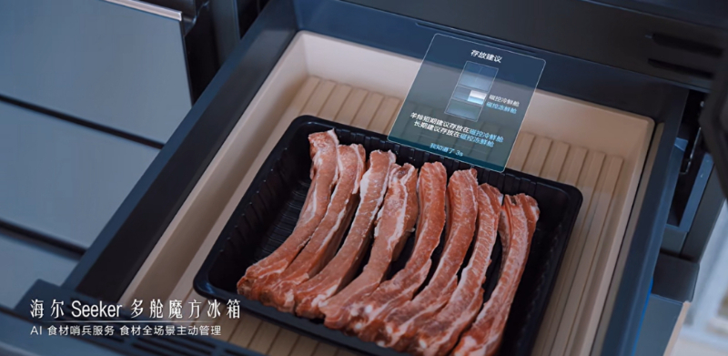

1
厨房智能硬件 · 竞品动态 · 用户趋势
海尔冰箱把“AI饮食管家”塞进真实厨房
从看库存、识别食材到联动蒸烤箱预热，冰箱正在从单体硬件变成家庭饮食入口。

新华网 8 月 29 日报道，海尔冰箱在 2026 年上半年线上、线下份额保持领先，增长背后不只是大白电规模，而是 AI 场景开始进入饮食链路。文章提到，海尔冰箱正围绕“购、存、管、取、烹”做全流程体验：买菜前查看余量，入库后由 AI 识别食材并给出存储建议，取出后推荐菜谱并联动蒸烤箱预热。
这条新闻不是今天发布，但它补到了厨电硬件最关键的落地方向：AI 不只做语音助手，而是进入食材识别、保鲜策略、菜单推荐和设备协同。对未来厨房而言，冰箱很可能先成为“食材数据中枢”，再向烟灶蒸烤、洗碗、水槽等设备扩展。
小编有话说这类 AI 厨电的价值点不在“会聊天”，而在能不能把食材、菜单、烹饪设备和家庭习惯串起来。真正值得关注的是传感器、视觉识别和跨设备联动能否长期稳定。